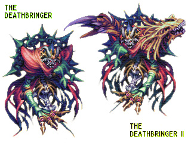

标题: 圣剑Legend of Mana的小秘密 作者: 陆行鸟X 时间: 2002-11-21 20:21 标题: 圣剑Legend of Mana的小秘密 A. 小游戏1 - Land Bopper Game
找一块3x3的区域，必须全部放置有地点且在屏幕中显示。按住L1不放，会出现Land Bopper Game，类似打地鼠。
B. 小游戏2 - 捉鬼
完成所有和Jumi相关的任务和波間に眠る追憶（28 Drowned Dreams），在火日（Salamander ）去ドミナの町（Domina），酒馆里会遇见一个シャドウゼル(Shadow Zero)，他会叫你和他玩一个游戏：在一定时间内捉住他的朋友，不同的姿势有不同的得分，最后会根据得分给你不同的奖品。试试看，挺难的，得分200以上得到最高奖励：高级种子とげとげの種（Spiny Seed）。
C. 得到レディバール（Blackpearl）为同伴
平时去煌めきの城（Bejeweled City）只能看见珍珠姬和琉璃，但在Jinn日去的话珍珠姬不见了，而在最顶层的房间里可以找黑珍珠为同伴。
D. 陆行鸟为第一个宠物
在进行牧场的任务前调查记忆卡中FF8的存档，然后触发牧场事件。
如果洋葱武士告诉你那是一个鸟蛋（Aerial Egg）的话就说明成功了。在正常情况下本任务应该是野兽蛋（Beast Egg）。
E. 神秘的95号敌人
怪物图鉴中的95号敌人找不到？用以下的方法：
方法一：完成紫紺の怨霊(39 The Ghost of Nemesis)后调查记忆卡中的Saga Frontier 2存档，然后再去骨之要塞。到三楼向左走，在你原来打不死皇帝（Deathbringer）的地方会看见两个骷髅兵，回答他们的问题后他们会把不死皇帝第二形态（Deathbringer II）叫出来。打败他后可得到一把攻击力62的双手剑：丙子椒林剑（Heishishorin）。如果你不打造武器，这柄双手剑应该是最强的武器。
方法二：只能在进行真紅の竜帝（40 The Crimson Dragon）中途有效。在进入炎龙帝城前白龙姬会要你准备好再出发，这时带着女龙战士和宠物去骨之要塞。在第三层可以直接遇见不死皇帝第二形态。不过这样是得不到那柄双手剑的。

右边的就是神秘的95号敌人的真面目：不死皇帝+骨龙
F. 得到指环：FastestWheel
完成豆一族を探せ(64 Catchin' Lilipeas)后调查记忆卡中陆行鸟赛车（Chocobo Racing）的存档，然后去海町ボルボタ（Polpota Harbor），在地图上ヘイソン（Skippie）会把这个几乎没用的指环送给你。这个指环唯一的属性是魔法防御为3，其余全是0。
G. 你的名字
第一次在战场上遇见洋葱武士时，他会问你是不是叫Chumpy，如果回答‘是’，他会把你的名字告诉游戏中其他的人物，以后会时常有人问你是不是真的叫Chumpy，回答是或否都不影响剧情。
H. 圣剑里的圣剑
魔法都市里的艺术宫殿的主人喜欢收集青铜像，而摆放在大殿里的是圣剑3中的6位主人公。
O. 快速升级 煌めきの城三层的机器人和ノルン山脈顶部的蓝龙都是Boss级敌人，反复和它们作战可以迅速赚取‘大’经验值。
P. 神々の黄昏和石中剑
在FF系列里经常出现的武器诸神的黄昏（Ragnarok）和石中剑（Excalibur）在圣剑中也存在。首先需要通关一次。用最难的模式进行游戏，使敌人的级别在64级以上。然后在地狱第三层打ダークスドーカー（Dark stalkers），能获得诸神的黄昏（攻击力50，片手剑）；到垃圾场或断崖xx（Gato）打ラストモールド（Moldy Goo）可以得到石中剑（攻击力62，大剑）。
V. 最难的小游戏---踩螃蟹
在海滩可以进行踩螃蟹的小游戏。这里总共有32只螃蟹，31只小的，1只大的（27号任务的Boss：Fullmetal Hagger）。如果踩死30或31只，会有一只企鹅出现在你家；如果踩死32只，还会增加一只小企鹅。注意：要得到小企鹅就必须在完成27号任务前踩死所有的螃蟹。否则最多只能踩死31只。
Y. 与同伴共同作战
方法一（游戏初期）：在第一个村子：ドミナの町（Domina）和教堂里的神父谈话3次，他会要你提问，按照3、2的顺序提问他会提示你用镇中心的房间。在镇中心调查左上角的房间会允许你选择另一个存档的主人公为同伴。
方法二（中期）：在魔法都市最上端的艺术馆的地下室有竞技场，洋葱武士会帮你叫出一个同伴。
Z.主题曲
主题曲是用瑞典语唱的。歌词如下：
Legend of Mana: Song of Mana
Performed by: ANNIKA
Jag hörde
En nostalgisk
Sång någonstans långt borta
Den rörde djupt I mitt hjärta
En ung styrka
Talade om livets sång
Jag är född av dig
Och jag kom tillbaks
Sluten I en sång, både vänlig och grym
Mitt live tog en vändning
Jag är född på nytt
Skyndar mig för att få vara dig nära
Om och om igen, längtar jag
Efter dig jag skyndar mig
För att få vara dig nära
Om och om igen, längtar jag efter dig
Min längtan ej nån diamant
(Bara en linten kristall)
Ett sandkorn i öknen, en droppe i havet
Men med högmod, kommer jag
Åstider kommer och går
Och jag följer i samma spår
Allt jag vill är att sova,
Omfamnad i din sång
Allt jag vill är att vänta,
Kura ihop i en dröm
Jag följer min längtan till dig
Satt ridande på en vind
Ekar långt din sång
Kastad av vågor, svallar ja mot dig
Ung energi (En nostalgisk sång)
Ditt leende jag håller så nära I hjärta
Och jag fortsätter min färd
Det är ont om tid, jag måste skynda mig
Trodde att jag var fri,
Fri från det förflutna
Men mångfärgade minnen
Blommar djupt i mig
Åntiglen, åntiglen når jag dig
Hör min sanning och se min dröm
Min vackra dröm
Åstider kommer och går
Och jag följer i samma spår
Trodde att jag var fri,
Fri från det förflutna
Men mångfärgade minnen
Blommar djupt i mig
Åntiglen, åntiglen når jag